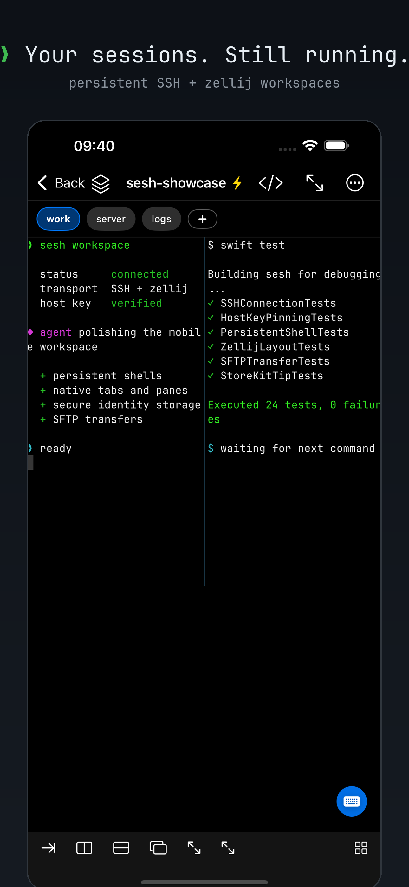
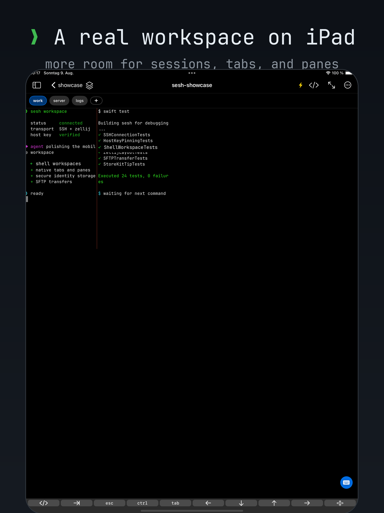

[]
zellij, natively
Sessions, tabs, and panes become tappable UI with quick switching, rename, focus, split, and overview controls.
sesh turns remote shells and zellij workspaces into a native iPhone and iPad experience. Attach, switch panes, move files, and keep working without shrinking a desktop app onto a phone.

The terminal stays a real terminal. Everything around it is designed for the device in your hand.
Sessions, tabs, and panes become tappable UI with quick switching, rename, focus, split, and overview controls.
Move around the app without destroying your PTY. Reopen the same connected shell with its content and scrollback intact.
Optional Esc, Ctrl, Tab, arrows, pane controls, saved commands, and history without wasting screen space.
Browse, upload, download, rename, create folders, and delete remote files with progress and cancellation.
Import or generate Ed25519 keys, protect them with Face ID or passcode, and keep credentials in Keychain.
Resizable sidebar, hardware shortcuts, separate shell windows, and Stage Manager workflows.
Jump between work, inspect every pane, and bring up terminal keys only when you need them.

Trust-on-first-use pinning warns when a server key changes and shows both fingerprints.
Passwords, passphrases, and private keys stay in the device Keychain.
SSH traffic flows between your device and your host. sesh has no relay or analytics backend.
Optional NFC security-key support handles forwarded WebAuthn challenges while credentials remain protected on the key.
Every host, shell, pane, transfer, identity, theme, and security feature is available without payment. If sesh earns a place on your home screen, you can leave an optional one-time tip. No subscription. No renewal. No locked features.
Download sesh